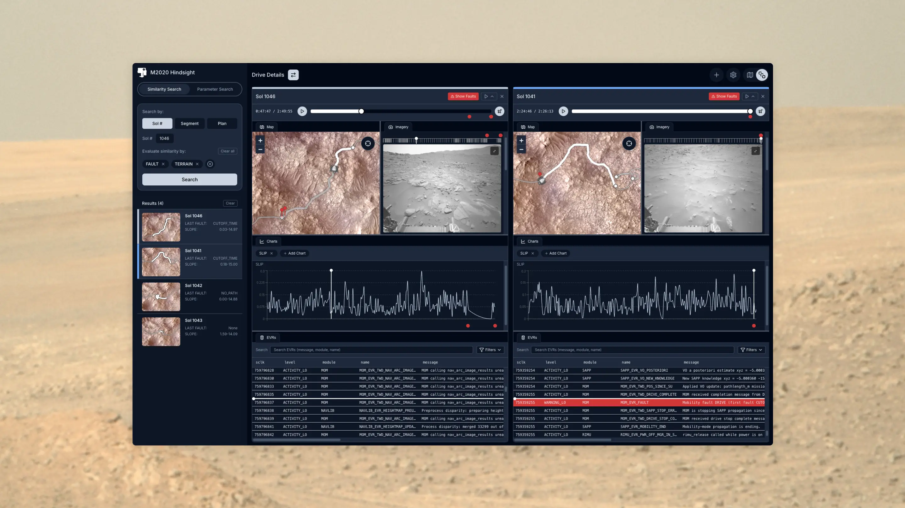
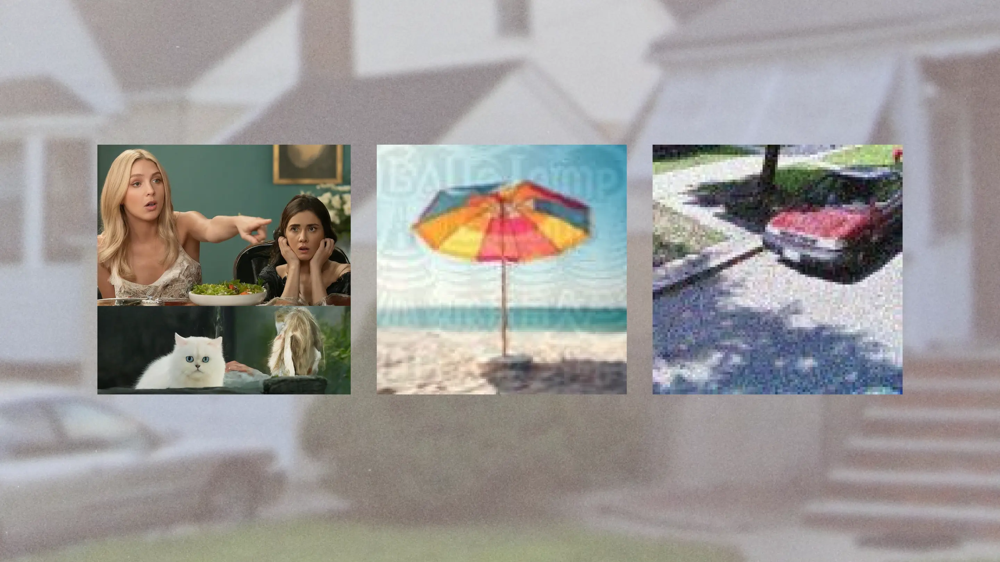

Hindsight
A web-based interactive visualization tool that supports the Perseverance rover operations team in rapid retrieval of relevant drive data for planning and fault investigation.
Digital Sky Surveys
A user experience probe for Caltech astronomers navigating high-dimensional multiwavelength data.

Conversation Starters
Shorter vignettes; examples of how I work and the kinds of problems I’ve tackled.